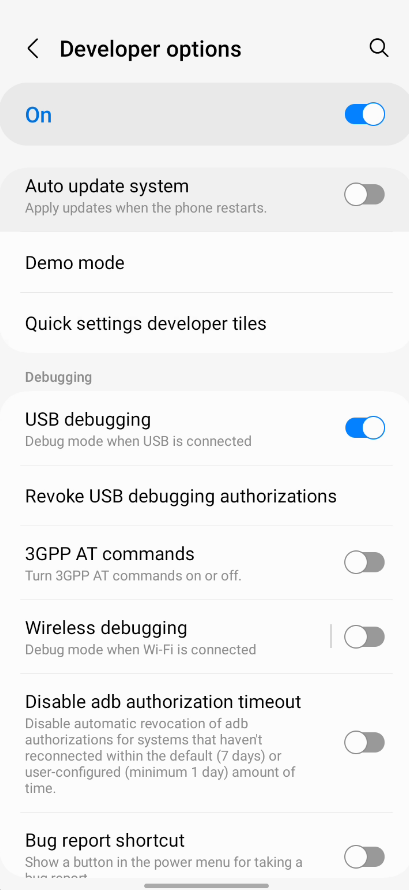
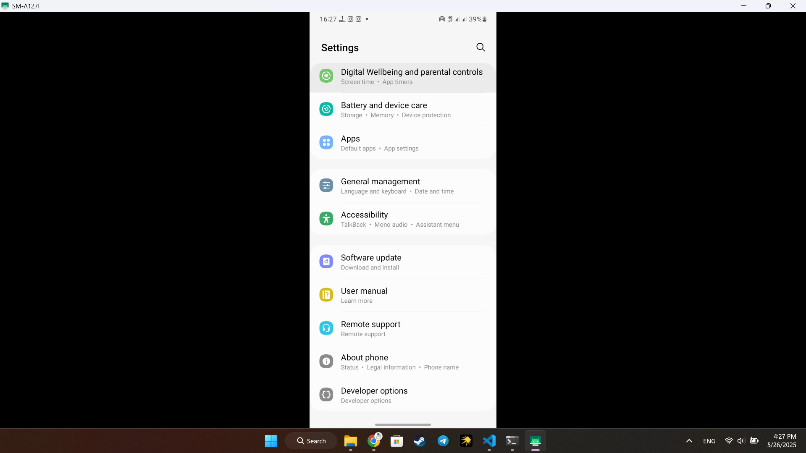

How to Use scrcpy to Control Your Android Phone from Your PC
scrcpy is a free and open-source tool that allows you to mirror and control your Android device
from your PC via USB (or wirelessly). It provides high performance and low latency, making it perfect for
developers, presentations, or personal use.
Step 1: Install scrcpy
You can install scrcpy using the following methods:
- Windows (using Chocolatey):
choco install scrcpy- Linux (Debian/Ubuntu):
sudo apt install scrcpy- macOS (using Homebrew):
brew install scrcpy
Step 2: Enable USB Debugging on Your Phone
Go to Settings > About phone and tap Build number seven times to enable developer mode. Then go to Settings > Developer options and enable USB debugging.
Step 3: Connect Your Phone
Connect your phone to your computer using a USB cable. Make sure to allow USB debugging permission on your phone when prompted.
Step 4: Launch scrcpy
Now run the following command in your terminal or command prompt:
scrcpyYour Android screen should now appear on your PC, and you can control it using your mouse and keyboard.
Optional: Wireless Connection
If you want to connect wirelessly, follow these steps:
- Connect the phone via USB temporarily and make sure USB debugging is allowed.
- Restart ADB in TCP/IP mode:
adb tcpip 5555 - Find your phone's IP address:
- Settings > About phone > Status or
- Settings > Network & Internet > WiFi > (Your Connected Network) > Advanced
- Connect using the IP address:
- Finally, launch scrcpy:
On your Android phone, go to:
You will see the IP address (usually something like 192.168.x.x).

adb connect <your_phone_ip>:5555scrcpyConclusion
scrcpy is a powerful and lightweight tool that makes it easy to control your Android device
from your computer. Whether you're recording tutorials, debugging apps, or simply navigating your phone with
a keyboard and mouse, scrcpy offers an efficient solution. With both USB and wireless modes available, it's
versatile and works great across platforms. Try it out and take your productivity to the next level!